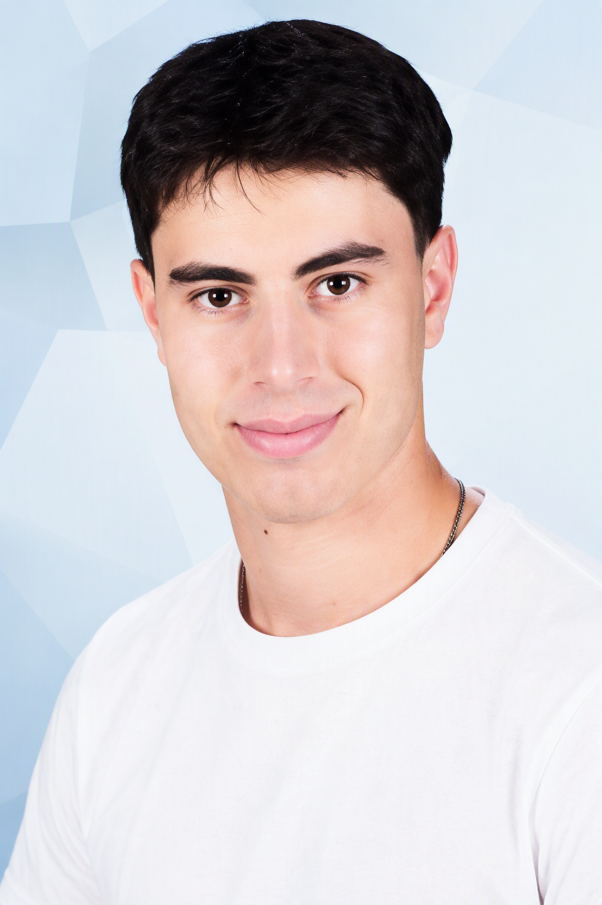

Première année · BUT GEII
IUT de Bordeaux, campus de Gradignan. J’y étudie l’électronique analogique, la logique combinatoire, les automatismes et la programmation sur Arduino.
Étudiant en BUT GEII · IUT de Bordeaux
J’étudie l’électronique, la programmation et les automatismes. Dans ce portfolio, je présente ce que je conçois et ce que je vérifie au cours de ma première année de BUT.

Je m’appelle Enzo Frejus et je suis en première année de BUT Génie électrique et informatique industrielle à l’IUT de Bordeaux, sur le campus de Gradignan.
En électronique, j’apprends à passer d’un schéma à un montage qui répond à un besoin précis. Pour le thermomètre de bain, par exemple, j’ai travaillé sur les seuils de commutation pour déterminer quelle LED devait s’allumer selon la température de l’eau.
Découvrir mes projetsIUT de Bordeaux, campus de Gradignan. J’y étudie l’électronique analogique, la logique combinatoire, les automatismes et la programmation sur Arduino.
En terminale, j’ai étudié les mathématiques et la physique-chimie. Pour le Grand Oral, j’ai travaillé sur le nombre π et sur la loi de refroidissement de Newton.
Concevoir un circuit électronique qui indique la plage de température de l’eau à l’aide de LED.
Étudier comment une machine de sport pourrait utiliser l’énergie du pédalage pour recharger un smartphone.
Étudier le comportement d’un AOP dans deux montages, le suiveur de tension et le comparateur.
Projet d’équipe dans lequel j’ai assuré la répartition des tâches et le suivi de l’avancement du groupe.
Lire un schéma, dimensionner des composants et comparer les tensions calculées avec une simulation.
Lire la valeur d’un potentiomètre, commander des sorties numériques et régler le rapport cyclique d’un signal PWM.
Organiser des résultats dans un tableau et présenter la démarche de conception dans un dossier technique ou un diaporama.